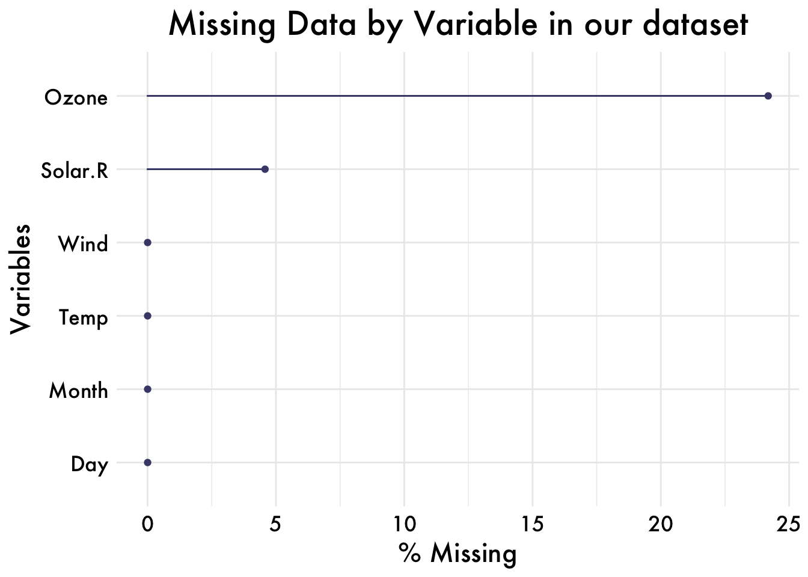
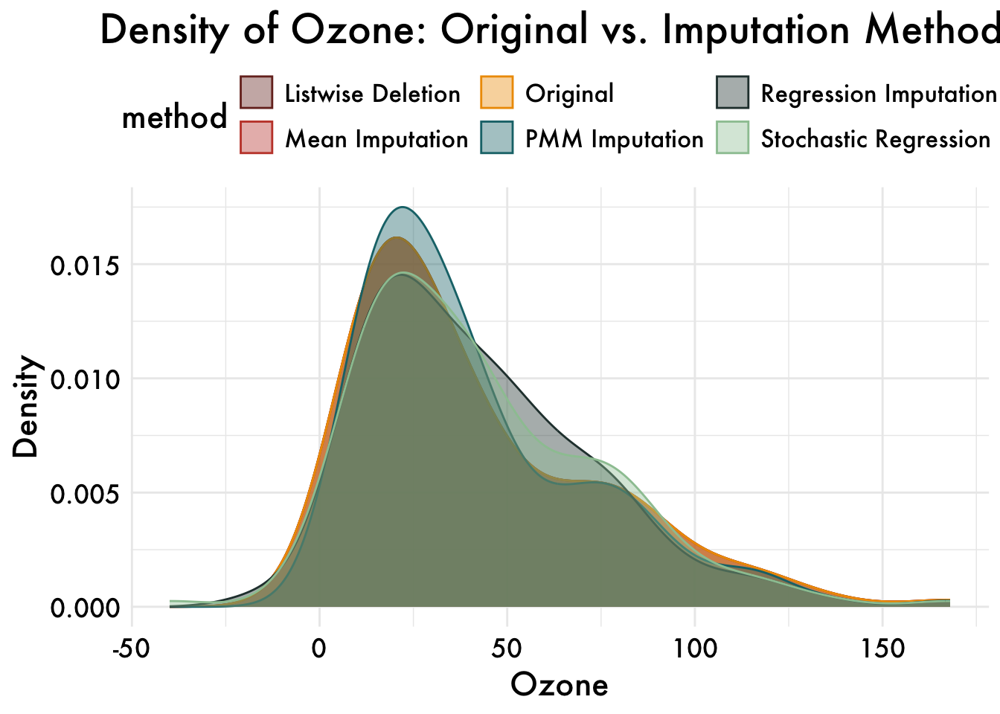

library(pacman)
pacman::p_load(tidyverse,mice,naniar,devtools,patchwork,gghalves,skimr,install = T)
#### define plot objects and stuff
palette <- c(
"#772e25", "#c44536", "#ee9b00", "#197278", "#283d3b",
"#9CC5A1", "#6195C6", "#ADA7C9", "#4D4861", "grey50",
"#d4a373", "#8a5a44", "#4a6a74", "#5c80a8", "#a9c5a0",
"#7b9b8e", "#e1b16a", "#a69b7c", "#9d94c4", "#665c54"
)
palette_condition = c("#ee9b00", "#c44536","#005f73", "#283d3b", "#9CC5A1", "#6195C6", "#ADA7C9", "#4D4861")
plot_aes = theme_minimal() +
theme(
legend.position = "top",
legend.text = element_text(size = 12),
text = element_text(size = 16, family = "Futura Medium"),
axis.text = element_text(color = "black"),
axis.ticks.y = element_blank(),
plot.title = element_text(size = 20, hjust = 0.5) # Adjusted title size and centering
)Missing data is a common problem and dealing with it appropriately is extremely important. Ignoring the missing data points or filling them incorrectly may cause the models to work in unexpected ways and cause the predictions and inferences to be biased.
Le’ts consider built-in dataset ‘airquality’ in R as a sample dataset.
# Load the airquality dataset
data("airquality")
data <- airquality
data |>
head() |>
DT::datatable()Question 1:
- Examine this dataset for missing values. While there are many ways to do this, the skim function from the library ‘skimr’ is elegant;
data |>
skim() |>
DT::datatable()- use the nanair package to visualize missing values
data |>
gg_miss_var(show_pct = TRUE) +
labs(title = "Missing Data by Variable in our dataset") +
scale_fill_manual(values = palette) +
plot_aes
- even though it’s hard to confirm based on visualizations alone, what do your visualizations lead you to believe about the missing data being MCAR, MAR, or MNAR?
- Carry out Little’s statistical test to evaluate MCAR and report results.
mcar_test(data) |>
DT::datatable()Creating a binary indicator for missingness allows you to test whether the presence of missing data is related to observed data.
- For instance, you can create a dummy variable: 1 = Missing; 0 = Observed.
- Next you can conduct a chi-square test or t-test:
- Chi-square: Compare proportions of missingness across groups.
- T-test: Compare means of (other) observed variables with missingness indicators.
data = data |>
mutate(Ozone_missing = ifelse(is.na(Ozone), 1, 0)) |>
group_by(Ozone_missing)
data |>
head() |>
DT::datatable()library(purrr)
library(broom)
# Specify which variables to compare
vars_to_test <- c("Solar.R", "Wind", "Temp")
# Build a summary tibble with group means and t-test results
t_summary <- map_dfr(vars_to_test, function(v) {
# 1) Compute the mean of variable 'v' by Ozone_missing
means <- data |>
group_by(Ozone_missing)|>
summarise(mean_val = mean(.data[[v]], na.rm = TRUE), .groups = "drop")
mean0 <- means$mean_val[means$Ozone_missing == 0]
mean1 <- means$mean_val[means$Ozone_missing == 1]
# 2) Run a Welch two‐sample t-test comparing groups
tt <- t.test(as.formula(paste(v, "~ Ozone_missing")), data = data, na.action = na.omit)
tt_tidy <- broom::tidy(tt)
# 3) Return one row with all results
tibble(
variable = v,
mean_obs = mean0,
mean_missing = mean1,
mean_diff = mean1 - mean0,
t_statistic = tt_tidy$statistic,
df = tt_tidy$parameter,
p_value = tt_tidy$p.value,
conf_low = tt_tidy$conf.low,
conf_high = tt_tidy$conf.high
)
})
# View the organized results
t_summary |>
DT::datatable()Question 2:
Create new and appropriately named datasets that are based on airquality for each of the following ways of fixing the dataset:
# 1) Original data
orig_data <- data|>
dplyr::select(Ozone)|>
mutate(method = "Original")
# 2) Listwise deletion
listwise_data <- data|>
drop_na(Ozone)|>
dplyr::select(Ozone)|>
mutate(method = "Listwise Deletion")
# 3) Mean imputation
mean_imp_data <- data|>
mutate(Ozone = ifelse(is.na(Ozone), mean(Ozone, na.rm = TRUE), Ozone))|>
dplyr:: select(Ozone)|>
mutate(method = "Mean Imputation")
# 4) Regression imputation (deterministic)
methods_reg <- make.method(data)
methods_reg[c("Ozone","Solar.R","Wind","Temp")] <- "norm.predict"
pred_reg <- make.predictorMatrix(data)
pred_reg[, "Ozone_missing"] <- 0
pred_reg["Ozone_missing", ] <- 0
imp_reg <- mice(data,
method = methods_reg,
predictorMatrix = pred_reg,
m = 1,
maxit = 10,
seed = 123,
printFlag = FALSE)
reg_data <- complete(imp_reg, 1)|>
dplyr::select(Ozone)|>
mutate(method = "Regression Imputation")
# 5) Stochastic regression imputation
methods_stoch <- make.method(data)
methods_stoch[c("Ozone","Solar.R","Wind","Temp")] <- "norm"
pred_stoch <- make.predictorMatrix(data)
pred_stoch[, "Ozone_missing"] <- 0
pred_stoch["Ozone_missing", ] <- 0
imp_stoch <- mice(data,
method = methods_stoch,
predictorMatrix = pred_stoch,
m = 1,
maxit = 10,
seed = 123,
printFlag = FALSE)
stoch_data <- complete(imp_stoch, 1)|>
dplyr::select(Ozone)|>
mutate(method = "Stochastic Regression")
# 6) Multiple imputation via predictive mean matching
imp_pmm <- mice(data[, c("Ozone","Solar.R","Wind","Temp","Month","Day")],
method = "pmm",
m = 5,
seed = 42,
printFlag = FALSE)
pmm_data <- complete(imp_pmm, 1)|>
dplyr::select(Ozone)|>
mutate(method = "PMM Imputation")
# 7) Combine all datasets
plot_data <- bind_rows(
orig_data,
listwise_data,
mean_imp_data,
reg_data,
stoch_data,
pmm_data
)# 8) Plot density overlays
ggplot(plot_data, aes(x = Ozone, color = method, fill = method)) +
geom_density(alpha = 0.4, adjust = 1) +
labs(
title = "Density of Ozone: Original vs. Imputation Methods",
x = "Ozone",
y = "Density"
) +
scale_color_manual(values = palette) +
scale_fill_manual(values = palette) +
plot_aes
What do you observe?